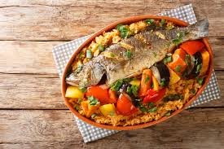

Jollof rice
This spicy rice dish celebrates Nigerian hospitality with tomatoes, onions, and fragrant spices.
Explore 10 African Countries and 60 iconic dishes
African Flavors takes you through African flavors, from Côte d’Ivoire to South Africa. Each dish comes with its story, ingredients, and spice level.
A selection of iconic recipes to discover quickly.
This spicy rice dish celebrates Nigerian hospitality with tomatoes, onions, and fragrant spices.

The national dish of Senegal, rich in fish, rice, and vegetables, a symbol of sharing and tradition.

A Maghreb classic with notes of saffron, cinnamon, and coriander, ideal for family meals.
African cuisine is a source of energy, history, and gustatory diversity.
Each recipe tells a local story, a tradition, and a generational connection.
A journey of earthy notes, warm spices, and fresh herbs—balanced between sweet and savory.
Simple dishes made with easy-to-find ingredients and practical cooking tips.
Send us a message to suggest a dish, ask a question, or share your experience.
The form validates name, email, favorite dish, and message.